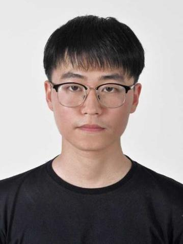
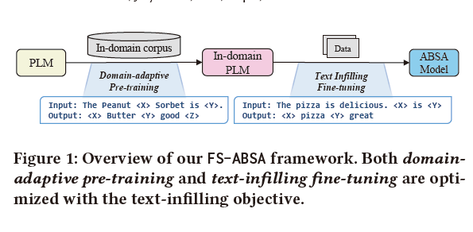

|
I am a second-year master student at Text Mining Group, Nanjing University of Science & Technology, fortunately supervised by Prof. Rui Xia<\a>. I earned my B.Eng. degree at the School of Science, Jiangnan University. My research interests lie at the intersection of natural language processing and machine learning. I did research in the Commonsense Reasoning and Commonsense Knowledge Graph completion since 2021. Currently, I am very interested in Large Language Models, and I'm doing research on the interaction of large language models. I’m actively looking for a Ph.D. position in the 2024 Fall. Free free to contact with me for any form of collaboration. |
 |
|

|
Xiangqing Shen, Siwei Wu, Rui Xia. ACL 2023 Paper / Code This work mainly solves the bipartite graph properties of commonsense knowledge graph ATOMIC, mines potential multiple paths in ATOMIC, and builds a more complete knowledge graph Dense-ATOMIC. |
|
 |
Siwei Wu, Xiangqing Shen, Rui Xia. ACL 2023 findings Paper / Code This work alleviates the problems of edge sparsity and nodes redundancy in the commonsense knowledge graph, and proposes a new commonsense knowledge graph completion framework. |
Selected Awards
National Encouragement Scholarship, Jiangnan University, 2018
Honorable Mentions of Mathematical Contest in Modeling, 2020
ACL 2023 Best Paper Nominated
|
Last modified in Nov. 2022. Design and source code from Jon Barron.
|